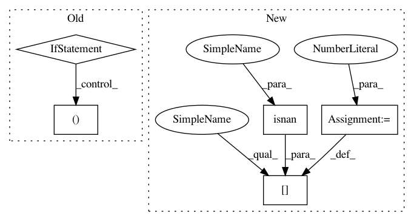

6a4956e37e6c42c691f7937cf01b47381bd24c83,art/attacks/evasion/fast_gradient.py,FastGradientMethod,_apply_perturbation,#FastGradientMethod#Any#Any#Any#,376
Before Change
self, batch: np.ndarray, perturbation: np.ndarray, eps_step: Union[int, float, np.ndarray]
) -> np.ndarray:
if isinstance(eps_step, (int, float)) and eps_step == np.inf:
clip_min, clip_max = self.estimator.clip_values
batch[perturbation < 0.0] = clip_min
batch[perturbation > 0.0] = clip_max
else:
batch = batch + eps_step * perturbation
if self.estimator.clip_values is not None:
clip_min, clip_max = self.estimator.clip_values
batch = np.clip(batch, clip_min, clip_max)
return batch
def _compute(
self,
After Change
) -> np.ndarray:
perturbation_step = eps_step * perturbation
perturbation_step[np.isnan(perturbation_step)] = 0
batch = batch + perturbation_step
if self.estimator.clip_values is not None:
clip_min, clip_max = self.estimator.clip_values
batch = np.clip(batch, clip_min, clip_max)
In pattern: SUPERPATTERN
Frequency: 3
Non-data size: 5
Instances
Project Name: IBM/adversarial-robustness-toolbox
Commit Name: 6a4956e37e6c42c691f7937cf01b47381bd24c83
Time: 2021-03-11
Author: beat.buesser@ie.ibm.com
File Name: art/attacks/evasion/fast_gradient.py
Class Name: FastGradientMethod
Method Name: _apply_perturbation
Project Name: IBM/adversarial-robustness-toolbox
Commit Name: 6a4956e37e6c42c691f7937cf01b47381bd24c83
Time: 2021-03-11
Author: beat.buesser@ie.ibm.com
File Name: art/attacks/evasion/projected_gradient_descent/projected_gradient_descent_pytorch.py
Class Name: ProjectedGradientDescentPyTorch
Method Name: _apply_perturbation
Project Name: gboeing/osmnx
Commit Name: b013b12999b16e11a5b965ae3ac0c9301c6888fa
Time: 2021-04-05
Author: boeing@usc.edu
File Name: osmnx/distance.py
Class Name:
Method Name: add_edge_lengths